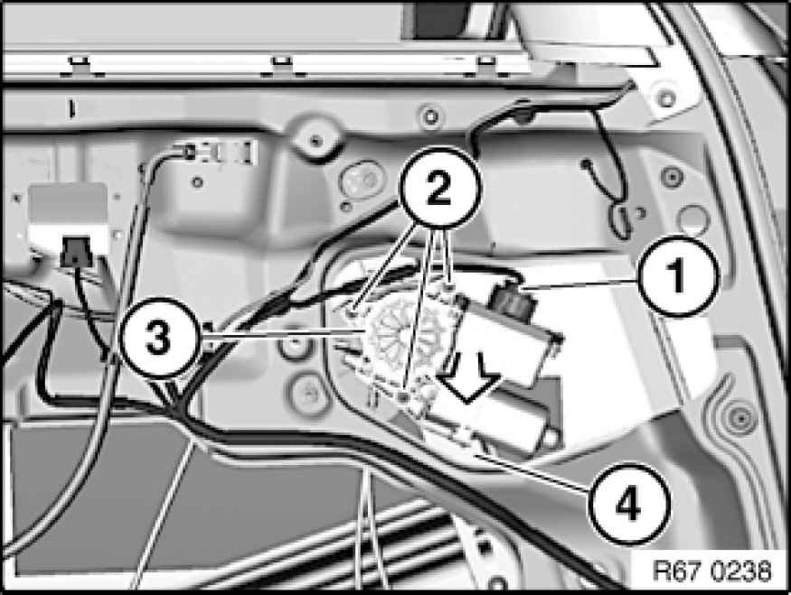

67 62 000 - Removing and installing / replacing flat motor for front left or right power window unit
67 62 000 - Removing and installing / replacing flat motor for front left or right power window unit

Special tools required:
- 00 9 310 00 9 310 Assembly Wedges (Set in Plastic Case)

Necessary preliminary tasks:
- Detach sound insulation on front door Removing and Installing/Replacing Sound Insulation in Left or Right Front Door in working area

Note:
For clearer illustration, shown with sound insulation removed.
Disconnect plug connection (1).
Unfasten screws (2).
Detach flat motor (3) in direction of arrow from power window unit (4) and remove.
Important!
If necessary, use special tool 00 9 310 00 9 310 Assembly Wedges (Set in Plastic Case) to release flat motor (3) from power window unit (4).
Guide wheel must not be pulled out of power window unit (4).
Installation:
Fit flat motor (3) exactly on teeth of power window unit.

Replacement:
A normalization must be carried out in order to activate anti-trapping protection.
Operating sequence for normalization:
- Open corresponding window completely.
- Operate corresponding power window switch in "Close" position (second switch stage).
- Once the upper end position has been reached, hold power window switch down for approx. 1 second more.
Normalization is thus completed.
Note:
Carry out function check (one-touch function, anti-trapping protection and, if necessary, comfort function).